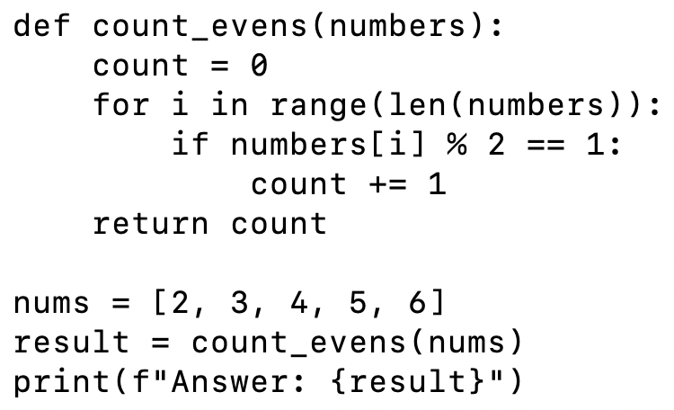

You can check your flags here. If you want to have your name on the leaderboard, enter your name when entering flags. Otherwise, leave the name field blank. To earn points on this activity, you MUST enter your flags and click Submit on the form at the bottom of this page.
Choose a partner with whom you can work synchronously, if possible. Otherwise, you may complete this activity on your own.
Take time to read this code individually. Then discuss it with your partner.

Watch Python Debugger by Tina Majchrzak
As mentioned in the Python Debugger video, you can use print statements to do "old school" debugging. If a portion of your code is not behaving as expected, a well placed print statement can alert you to issues like a value not being properly passed to a function, a variable storing data differently than you thought, etc. Adding print statements is a handy technique that always works. However, you may be able to speed up your debugging process by adding breakpoints and watch values to your code. Many modern IDEs provide this capability.
In the Python Debugger video, a breakpoint is added to the code to pause program execution and allow you to investigate values stored in variables at that point in the program.
In the Python Debugger video, which line number is clicked to add the breakpoint?
In the Python Debugger video, PyCharm automatically displays the values of variables in scope at the breakpoint, but you can add your own expressions to watch as well.
In the video, which values are shown automatically when the breakpoint is reached initially? Build the flag by putting pipes between the variable names. List them in order as they appear, top to bottom.
In the video, after clicking step over for the first time and entering the for loop, which variable comes into scope and automatically has its value added to the watch list?
In the video, what is the first expression added manually to the watch list?
In the video, which button is clicked to jump quickly to the next breakpoint? The flag is the two-word name of PyCharm's button, including the space. HINT: You can get its name by hovering over it yourself or by pausing the video when Tina hovers over it.
Apply these new skills to debugging the code below, which records random rolls of a 20-sider for us. Our goal is to find the cause of its runtime error.
from random import randint
def random_rolls():
num_rolls = 100
rolls = [0] * num_rolls # Initialize list with 100 elements
print(rolls)
for i in range(num_rolls):
print(f"Recording roll #{i + 1}")
roll = randint(1,20)
rolls[i+1] = roll
print(f"Roll recorded: {roll}")
print("\nAll scores recorded. Calculating average...")
average = sum(rolls) / len(rolls)
print(f"Average roll: {average:.2f}")
print(rolls)
random_rolls()Running the program in its current format, produces an error for which roll number?
Based on what the code displays when rolls is printed at the top of the loop, what could you put under the green boxes in the code below to set rolls equal to an array with 5 ones? Build the flag by putting pipes between the answers.
rolls = [ 🟩 ] * 🟩Inspecting all the rolls prior to the error points to a potential edge case or off-by-one issue. Edge cases are at input boundaries (e.g., maximum or minimum values, empty values, etc.). It's common to find logic gaps for these values that aren’t triggered when testing typical input.
Off-by-one errors arise when a loop executes one too many or one too few times. They often occur when range boundaries are incorrect (e.g., using <= rather than <, starting at 1 instead of 0, etc.). They are common at the beginning and ending of loops and are a frequent source of errors when handling edge cases.
It appears this code has an issue at the end of the loop, but 100 iterations is a lot to sift through. Try changing num_rolls to 20 in the code and rerunning it.
Now that num_rolls is 20, for which roll number does the program produce an error?
This gives more evidence, we might have an off-by-one issue. Put a breakpoint on line 7, start the debugger, and click Step Over several times until you have a feeling for how the loop is behaving.
What three variables are in scope? The debugger should display their values automatically. Build the flag by listing them in alphabetical order with pipes between them.
Add the expression i+1 as a watch value. Once you feel comfortable with how the loop is behaving, start clicking Resume Program. Notice how the values stored in rolls change.
Keep clicking Resume Program until you get to the point where the value 16 is displayed for i in the set of watched variables. Note that i+1 will be 17. How many zeros remain at the end of the rolls list?
Click Step Over to enter the loop. The next 0 in the list to be updated will be at location i+1. What is i+1 right now?
Starting at your current location, where i now shows as 17, count the number of times you're able to click Resume Program before the runtime error occurs. How many times were you able to click it?
What value is i+1 now?
What value is stored in the first location of the rolls list?
The rolls list should contain 20 random numbers between 1 and 20 at locations 0 through 19. Hopefully, at this point you see the issue and are able to update the code and make it work properly.
After you fix the code and get it working with num_rolls set back to 100, save it in a file called main.py, put that in a folder, zip the folder, and submit it to this code checker to get the flag.
You must enter your flags below and click submit to earn points for this activity. You do NOT have to enter all flags to earn credit, but you must click submit. You may update the flags and submit them an unlimited number of times until the due date. Your highest score will be entered in the gradebook.
If a flag has more than one box to the right of it, enter the same flag into each box. These flags are worth more points.